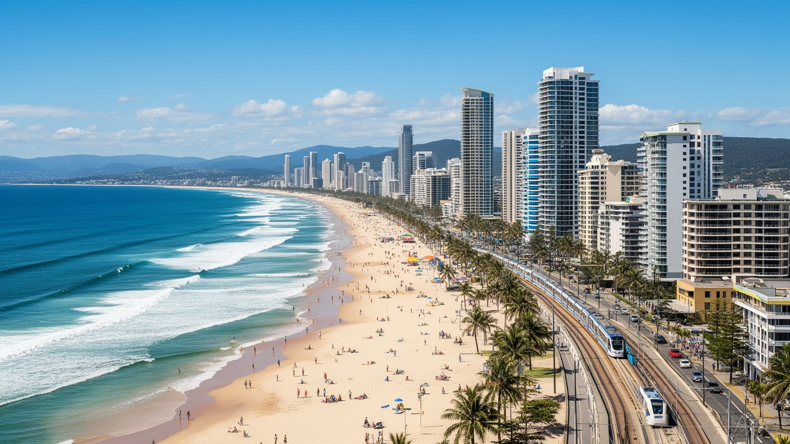
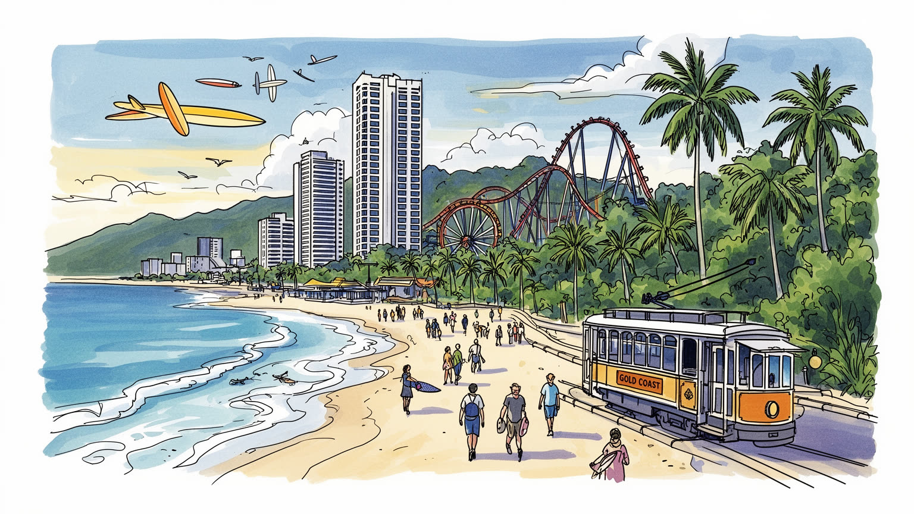
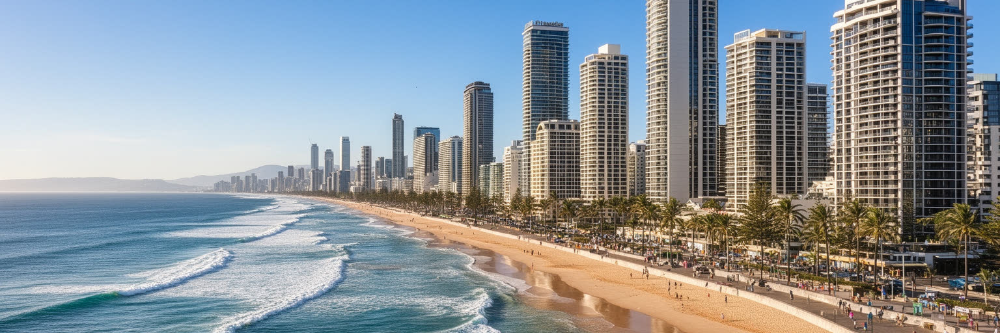
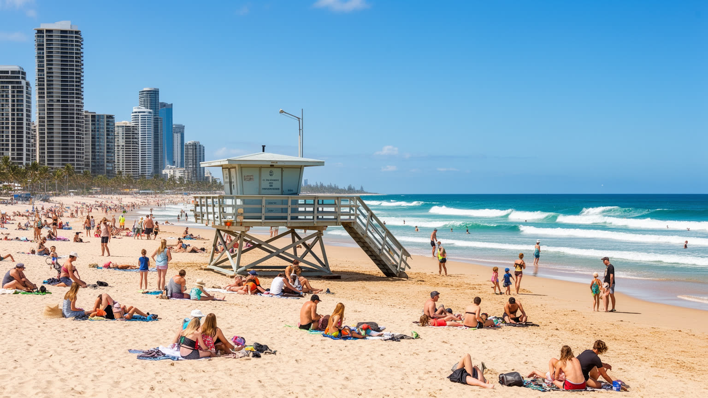
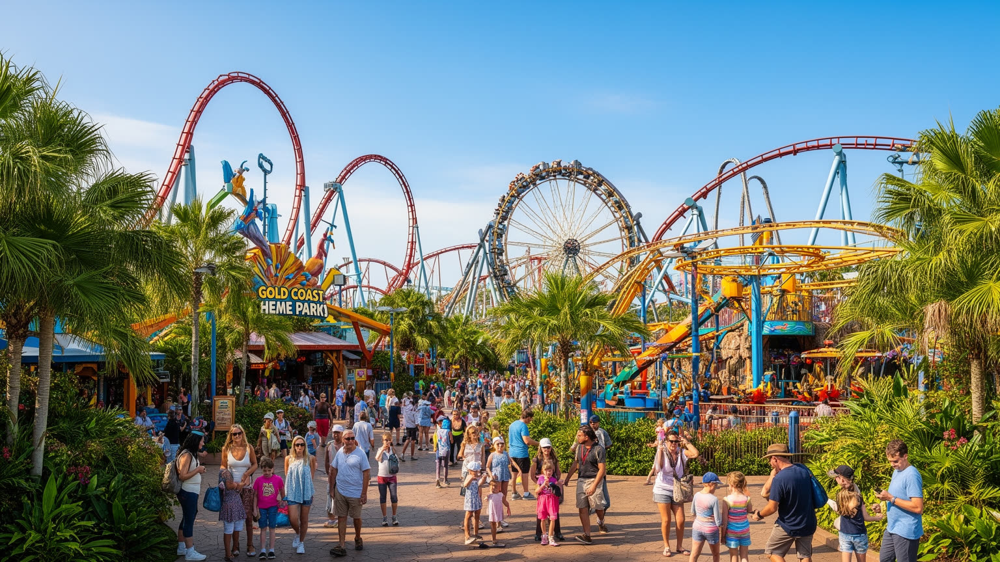
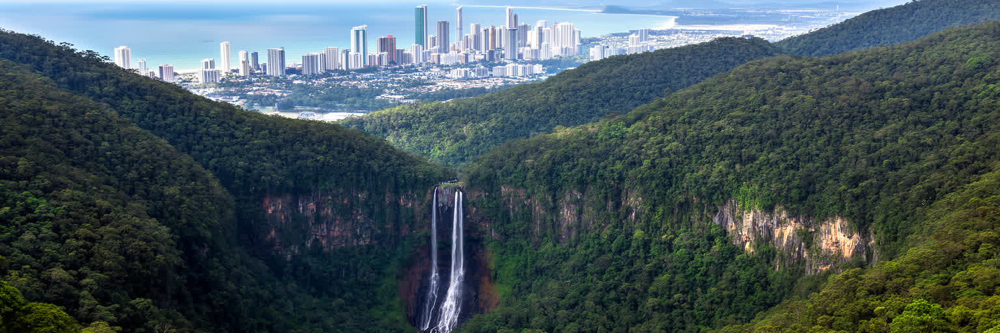
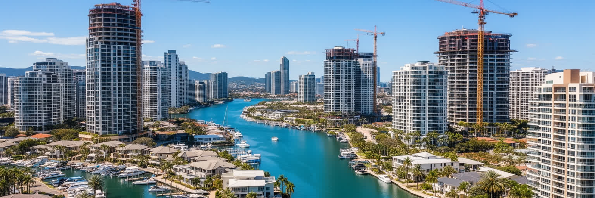
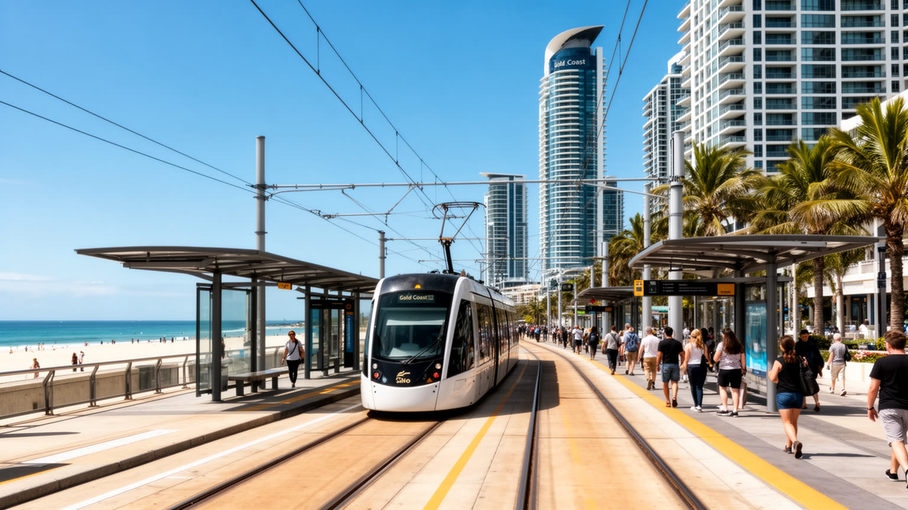
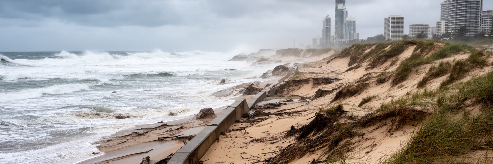
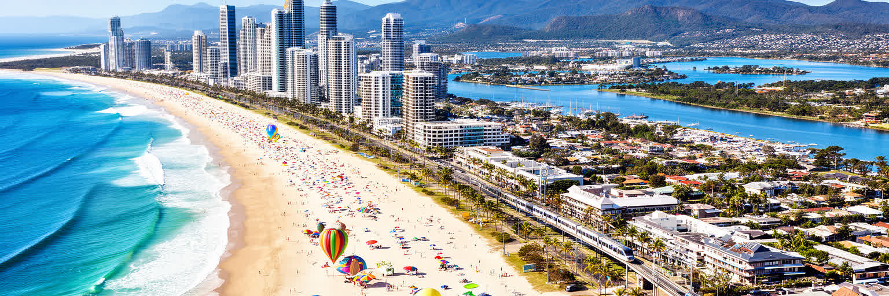

地政学
ゴールドコーストは豪州東岸の成長回廊にあり、ブリスベン、州境、太平洋観光を結びます。軍事首都ではありませんが、国内移住、国際教育、空港、海岸防災が都市の戦略性を形作ります。沿岸管理も政治の一部です。

🇦🇺 オーストラリア / オセアニア / World City Atlas
太平洋の長い砂浜、高層ホテル、運河住宅、テーマパーク、内陸の雨林が近接する豪州の海岸都市です。観光だけでなく、先住民の土地、住宅、労働、気候リスクも読む都市です。
都市の骨格
ゴールドコーストは長い砂浜を観光の正面に置きながら、運河住宅、内陸の丘陵、テーマパーク、大学、病院、ライトレールを組み合わせて成長してきました。海辺の明るさの裏に、住宅費、気候、先住民の土地、季節労働の課題もあります。

ゴールドコーストは豪州東岸の成長回廊にあり、ブリスベン、州境、太平洋観光を結びます。軍事首都ではありませんが、国内移住、国際教育、空港、海岸防災が都市の戦略性を形作ります。沿岸管理も政治の一部です。
観光、建設、医療、教育、映画産業、海洋産業が経済を支えます。ホテル清掃、飲食、ライフセービング、建設現場、介護、学生労働も多く、繁忙期と住宅費の差が働く人の生活を揺らします。海辺ほど裏方の仕事も増えます。
ユガンベ語族の土地の上に、サーフ文化、競技、教会、学校、食、音楽祭が重なります。派手な観光地の印象だけでなく、先住民の記憶、家族の週末、地域行事が都市の文化を作ります。多様な暮らしもよく見えます。
浜辺、テーマパーク、森は訪問者を引き寄せますが、住民には家賃、車依存、洪水、浸食、通勤、治安が日常の条件です。観光都市の成功は、働く人が海辺の近くに住み続けられるかでも測られます。生活の質も問われます。

ゴールドコーストの都市骨格は、太平洋に面した細長い砂浜と、その背後に並ぶ高層ホテル、住宅塔、ショッピング街、運河住宅地でできています。中心は一つの歴史的広場ではなく、サーファーズパラダイス、ブロードビーチ、サウスポート、バーリー、クーランガッタのような海沿いの節点が連なります。海岸線は観光の正面であると同時に、地価、景観規制、ビーチ補砂、波、浸食、高潮対策をめぐる政治の場です。低地と運河は水辺の魅力を作りますが、豪雨や洪水時には弱点にもなります。内陸へ進むと住宅地、工業団地、大学、撮影スタジオ、丘陵、雨林が現れ、海辺の華やかさだけでは都市全体を説明できません。車で移動する郊外性と、歩いて海へ出られる観光地性が同居するため、同じ市内でも生活の密度と時間感覚は大きく変わります。砂浜は公共空間ですが、その周辺の不動産は激しく商業化されます。誰が海に近く住めるのか、誰が遠くから働きに来るのかを見ると、この都市の社会構造が見えてきます。さらに市域はブリスベン都市圏と州境の間で伸び、北へ通勤する人、南へ越境する人、空港を使う観光客、地域メディアが伝える沿岸ニュースが交差します。地図では細い帯に見えても、海と内陸を往復する動きが都市の実際の広がりです。朝の通勤と週末の余暇が同じ道路で重なり合います。

ゴールドコースト観光の第一印象は、長い砂浜、青い空、ホテルのバルコニー、塩の匂い、朝のコーヒー、夜のネオンです。サーファーズパラダイスは象徴的な名前を持ち、浜辺と娯楽、飲食、ショッピング、ライブ音楽、バーの夜を一体にして売り出してきました。しかし観光は単なる余暇ではなく、都市の雇用、家賃、交通、治安、清掃、海岸管理を動かす力です。繁忙期にはホテル、短期賃貸、屋台型の軽食、ツアー、警備、救急対応が膨らみ、働く人の勤務時間も長くなります。家族旅行、スクールホリデー、国際観光、週末の州内旅行は、それぞれ違う消費と混雑を生みます。観光地の明るさは、早朝の清掃、深夜の接客、ライフセーバー、交通整理、食材配送に支えられます。海辺の店舗が訪問者向けに変わるほど、住民のための日用品店や静かな生活は圧迫されることがあります。観光の成功を測るには、宿泊者数や消費額だけでなく、住民が浜辺を日常の場所として使い続けられるかを見る必要があります。週末のマーケット、土産物店、モール、夜食の店は街路経済を厚くしますが、騒音、酔客、物価上昇も表に出にくい課題として蓄積します。観光都市を読む視点は、楽しい表面を否定せず、その運営の条件を丁寧に見ることです。路上の音も残ります。海辺の笑顔は、見えにくい夜勤と清掃にも支えられます。

ゴールドコーストは砂浜だけでなく、内陸側に集まるテーマパークによって家族旅行の都市にもなりました。大型遊園地、水族館型施設、映画関連の娯楽施設は、雨の日や波が荒い日にも観光客を都市に留め、ホテル滞在を伸ばします。これらの施設は高速道路、駐車場、バスツアー、郊外住宅地、学生アルバイトと結びつき、海岸沿いとは違う経済圏を作ります。働く人は接客、整備、安全管理、飲食、清掃、ショー運営、動物管理、警備などに分かれ、季節需要に合わせて勤務が変動します。テーマパークは子どもの記憶を作る場所ですが、同時に安全、労働条件、動物福祉、交通渋滞、土地利用の議論も抱えます。観光都市としてのゴールドコーストは、自然の魅力を売るだけでなく、人工的な楽しさを大量に供給する仕組みを持っています。その仕組みがあるから、海が荒れる日でも経済が動き、家族連れは複数日滞在します。テーマパークを見ることは、都市がどうやって天候リスクを分散し、観光を通年化し、郊外の土地を娯楽産業へ変えてきたかを見ることです。華やかなゲートの外には、通勤する従業員と周辺住宅地の日常があります。施設はまた、若者の初めての職場、地域学校の遠足先、祖父母を含む三世代旅行、国際観光客の記憶にもなります。だからこそ、事故防止や働き手の訓練は、娯楽の品質を左右します。家族向け都市という評価は、子どもを預かる安全文化と地域交通の整備で保たれます。

ゴールドコーストを海岸都市としてだけ見ると、内陸の丘陵と雨林の存在を見落とします。ラミントン、スプリングブルック、タンボリン方面の森や滝は、砂浜とは別の観光資源であり、水源、気候緩和、生物多様性、週末の避暑地として働きます。海辺の高層街から短い移動で湿った土の匂いがする谷へ入れることは、この都市の大きな魅力です。しかし内陸部は単なる背景ではありません。道路の拡幅、住宅開発、観光客の増加、山火事、豪雨、土砂災害、外来種、先住民の土地との関係が重なります。丘陵の集落には、海岸の観光業とは違う暮らしがあり、農園、工芸、カフェ、小規模宿泊、週末市、音楽イベント、保全活動が都市圏の多様性を支えます。自然を楽しむためのアクセスが増えるほど、静かな環境や生態系に負担もかかります。ゴールドコーストの環境政策は、ビーチだけでなく、背後の森をどう守るかと切り離せません。内陸の森は、都市が消費する景観ではなく、暑さを和らげ、水を蓄え、地域の記憶を残す基盤です。さらに森への日帰り観光は、道路沿いの小商店や案内業を支えますが、混雑する展望台や歩道は維持費を必要とします。自然を近くに持つ都市ほど、利用と保全の境界を丁寧に決める必要があります。森は都市の外側ではなく、海辺の暑さと水循環を支える内側のインフラでもあります。
ゴールドコーストのサーフ文化は、観光ポスターの装飾ではなく、都市の時間割と身体感覚を作る生活文化です。早朝に海へ入る人、週末に子どもをライフセービングクラブへ連れて行く家族、波を読む競技者、浜辺を走る高齢者、ビーチバレーやヨガで体を動かす住民がいます。サーフィンは自由な遊びに見えますが、実際には海の知識、危険管理、ローカルなルール、公共空間の共有を必要とします。ライフセーバーやクラブは安全を守るだけでなく、地域の社交、ボランティア、若者教育の場にもなります。一方で、人気の波は混雑し、観光客や初心者との摩擦、駐車場、海岸浸食、ボード事故も起きます。サーフ文化は男性的な英雄像で語られがちですが、女性、子ども、移住者、障害のある人も海と関わりを広げています。海は誰のものか、危険を誰が管理するのか、商業スクールと地元利用をどう調整するのかが、サーフ都市の公共性を決めます。ゴールドコーストを読むには、波を景色として眺めるだけでなく、海を使う人々の暗黙の秩序と、そこに入れない人の存在まで見る必要があります。競技大会、サーフブランド、スポーツ医学は都市の名を広げますが、日常の浜辺では譲り合い、救助訓練、天候判断が文化を保ちます。海を楽しむ自由は、海を読む責任と結びついています。砂浜の文化は、観光客にも住民にも開かれているからこそ、共有の作法を必要とします。

ゴールドコーストの住宅をめぐる難しさは、景色の良い海辺に住みたいという単純な願望と、観光都市としての投資需要が重なるところから始まります。高層マンション、運河沿いの戸建て、短期賃貸、退職後の移住、学生住宅、郊外の新興住宅地が同じ市場に入り、価格を押し上げます。ホテルや飲食店、介護、清掃、建設で働く人ほど、職場の近くに住みにくくなり、車で遠くから通う負担を抱えます。短期滞在向けの住宅が増えると、地域の常住者、学校、商店、近所付き合いは薄くなります。海辺の再開発は税収と景観を生む一方、古いアパートや小さな店を失わせることもあります。住宅は個人の資産である前に、観光都市を支える労働者が暮らす基盤です。若い家族、留学生、高齢者、季節労働者、先住民コミュニティが同じ不動産市場で競うと、都市の包容力が試されます。子どもが学校へ通い、年配の住民が診療所や買い物へ行き、夜勤の人が安全に帰れる住まいがどれだけあるかを見る必要があります。住宅の近さは、都市への参加の近さでもあります。人口増加が続くほど、住宅供給、公共交通、保育、医療、身近な商店を一体で考えなければ、海辺の成功は通勤時間と家賃の負担として住民に返ってきます。住まいは、観光都市の裏側ではなく、観光を続けるための中心条件です。近くに住めることが地域参加を支えます。

ゴールドコーストは長く車に頼る郊外型の都市として広がってきました。浜辺沿いの地区、内陸の住宅地、テーマパーク、大学、病院、空港、州境方面を移動するには、道路と駐車場が大きな役割を持ちます。その一方で、ライトレールはサウスポート、サーファーズパラダイス、ブロードビーチなどの観光と業務の節点を結び、海岸沿いの移動を変えつつあります。公共交通が整うと、観光客は車なしで動きやすくなり、大学生、専門学校生、病院へ通う住民にも選択肢が増えます。しかし都市全体は細長く、内陸へ行くほどバス接続や運行頻度が難しい論点になります。交通は渋滞を減らす技術だけでなく、誰が仕事、学校、病院、浜辺へ届けるかを決める公平性の課題でもあります。車を持てない若者、高齢者、留学生、低所得の労働者にとって、移動手段は生活の自由そのものになります。ライトレール沿線の地価上昇は利便性を高める一方、家賃を押し上げる可能性もあります。ゴールドコーストを持続的な都市にするには、観光動線だけでなく、夜勤の帰宅、雨の日の通学、子どもの習い事、内陸住宅地から病院への移動まで含めて交通を考える必要があります。空港や州境方面への接続も、観光と通勤の双方に関わります。移動の選択肢が増えるほど、車を前提にした都市の弱さを少しずつ補うことができます。駅前の小商いも育ちます。
ゴールドコーストの砂浜、川、丘陵、森は、観光開発より前からユガンベ語族を含む先住民の土地として意味を持ってきました。都市を読むとき、地名、河口、狩猟採集、貝塚、儀礼、移動路、季節の知識を背景に置かなければ、海岸の価値を浅く理解してしまいます。植民地化は土地の利用、家族、言語、労働、教育を大きく変え、その影響は現在の健康、住宅、雇用、文化継承にも及びます。観光都市はしばしば明るい未来だけを語りますが、土地の記憶は消費される風景ではありません。先住民のガイド、文化教育、言語復興、土地管理、若者支援は、都市の公共性を深める仕事です。海辺の開発や内陸の道路計画では、文化遺産と環境への配慮が不可欠になります。歓迎の言葉、追悼行事、教会や多文化団体の集まりを飾りとして扱うだけではなく、誰が意思決定に加わり、利益を得て、記憶を語る権利を持つのかが問われます。ゴールドコーストを理解することは、リゾート地を見ることだけではなく、現在の都市がどの土地の上に立ち、どの関係を回復しようとしているのかを見ることです。海と森の美しさは、所有と記憶の問いから切り離せません。学校、観光案内、公共施設、開発審査で先住民の知識がどう扱われるかは、都市の成熟を示します。土地への敬意は式典だけでなく、日々の制度に表れる必要があります。記憶を共有することは、観光の物語を深くし、住民が土地と結び直す機会にもなります。

ゴールドコーストの気候は晴天と穏やかな冬で知られますが、沿岸都市としてのリスクも大きくなっています。夏の豪雨、熱帯低気圧の影響、高潮、海岸浸食、洪水、暑さ、山火事の煙は、観光だけでなく住宅、保険、道路、下水、電力、救急体制に関わります。砂浜は都市の看板でありながら、波と流れで常に形を変えるため、補砂、護岸、避難情報、建築規制が必要になります。運河沿いや低地の住宅は水辺の魅力を持つ一方、浸水や排水の課題を抱えます。暑さは屋外労働者、観光客、高齢者、子どもに影響し、日陰、水分補給、公共施設の涼しさが生活の質を左右します。気候変動はこの都市の魅力を突然消すのではなく、すでにある住宅格差、保険料、交通遮断、労働条件を少しずつ厳しくします。観光地としての安全な印象を保つには、海岸の見た目だけでなく、災害時に誰へ情報が届き、誰が避難でき、どの仕事が危険にさらされるかを見る必要があります。特に短期滞在者、留学生、乳幼児連れの家族、独居の高齢者は地域の避難情報に不慣れです。多言語の案内、地域ラジオやニュース、分かりやすい警報、涼める図書館やモールを整えることも、観光都市の気候適応になります。気候への備えは、景観を守るためだけでなく、弱い立場の人を早く支えるためにあります。地域の連絡網も命を守ります。

ゴールドコーストは、世界的な金融首都や国家首都とは違う形で重要な都市です。ここでは、海辺の余暇、国内移住、住宅投資、テーマパーク、先住民の土地、気候リスク、公共交通、映画産業、国際教育が一つの都市圏に重なります。明るい観光地としての印象は強いものの、その背後には、働く人が住めるか、浜辺を誰が管理するか、先住民の記憶をどう扱うか、豪雨や浸食にどう備えるかという現実的な問いがあります。都市の魅力は自然に与えられたものではなく、ライフセーバー、清掃、ホテル労働、建設、交通、保全活動、学校、病院、地域クラブ、新聞や放送が伝える日常情報が毎日支えています。海岸の高層街と内陸の森、観光客の短い滞在と住民の長い生活、投資用住宅と働く人の家探しを同じ地図で見ると、ゴールドコーストは現代の沿岸成長都市の縮図になります。美しい浜辺を楽しむだけでなく、その美しさを誰が維持し、誰が負担を引き受け、誰が土地の記憶を語れるのかを考えることで、この都市の奥行きが見えてきます。映像産業、大学、医療、スポーツ科学が伸びるほど、都市は休暇先から撮影と学びの場へも変わります。市場、モール、夜の飲食、祭り、海辺の運動が日々の生活を補い、その変化が観光の脆さを補いながら、新しい格差も生みます。だからこの都市の価値は、眺めの美しさだけでなく、成長を生活の安定へ変えられるかで決まります。